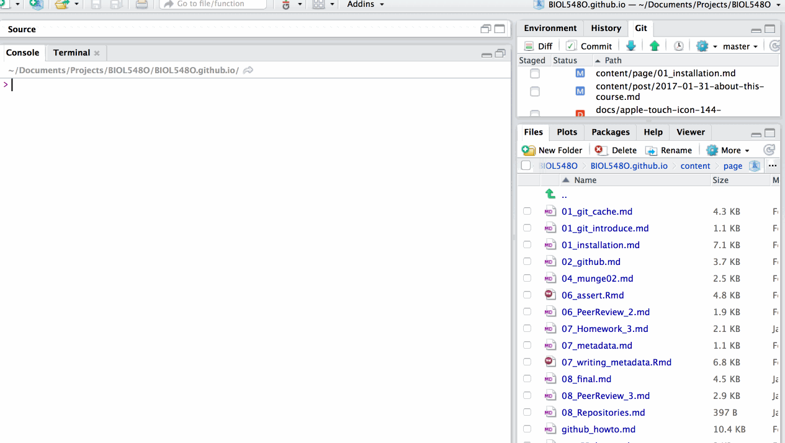

Installation
Installing software
In this course, we’re going to use open-source software to learn how to manage and share data. Our hope is to provide you with a basic level of comfort with all of these tools, which you can use in your future projects!
You will need five things during this course:
- a laptop
- git
- a GitHub account
- R
- Rstudio (an IDE for R)
Please see installation instructions below for all the different software tools you need. These are modified from several sources, mostly from Jenny Bryan’s excellent STAT545 website
Git and Github
As you work on your data project, you will be creating a well-organized directory for sharing your project with other people. One of the best ways to share a complex project is via git and its companion website Github. Throughout this course we will be practicing interacting with both of these.
Do I already have git installed?
You might want to know if you have these things installed already. R, and Rstudio, if present, are installed as regular programs on your OS. git, however, is a command line tool and may not be obvious. One way to check is by running which git

git is a command-line program for doing “version control” : that is, for tracking changes to a group of files all at once. We’re going to use it to track changes to our research project (i.e. data and the code that manipulates the data).
Git installation: Windows
We reccommend this approach, following Software Carpentry, an organization that “teaches lab skills for scientific computing” (and also STAT545):
- Install Git for Windows, previously known as
msysgitor “Git Bash”, to get Git in addition to some other useful tools, such as the Bash shell. - This approach leaves the Git executable in a conventional location, which will help you and other programs, e.g. RStudio, find it and use it.
Git installation: Mac
Option 1 (recommended): Install Git from here: http://git-scm.com/downloads.
Git installation: Linux
If Git is not already available on your machine you can install it via your distro’s package manager (e.g. apt-get or yum).
Ubuntu or Debian Linux
sudo apt-get install git
Fedora or RedHat Linux
sudo yum install git
Register a GitHub account
Github is an increasingly popular website for sharing code and data. It is an excellent platform for collaborating on projects, including scientific manuscripts.
- Register for a free individual GitHub account
- Request the student discount. This should give you some free private repositories for a couple of years.
Next steps
After installation, you still need to introduce yourself to Git and get it to remember your GitHub username and password. If your Git client guides you through this, seize that opportunity! Otherwise follow the links for some assistance.
R and RStudio
Install R, a free software environment for statistical computing and graphics from CRAN, the Comprehensive R Archive Network. Install the precompiled binary for your Operating system.
Install RStudio’s IDE (i.e. an Integrated Development Environment), a powerful user interface for R. Get the Open Source Edition of RStudio Desktop (free).
- We strongly suggest you try out the Preview version. You’ll often find helpful new features in these! Remember to update frequently
- RStudio comes with a text editor, so there is no immediate need to install a separate stand-alone editor.
- RStudio can interface with Git(Hub). However, we will have to set that connection up first.
Add-on packages
R is an extensible system and many people share useful code they have developed as a package via CRAN and GitHub. To install a package from CRAN, for example the dplyr package for data manipulation, here is one way to do it in the R console (there are others).
install.packages("dplyr", dependencies = TRUE)
By including dependencies = TRUE, we are being explicit and extra-careful to install any additional packages the target package, dplyr in the example above, needs to have around.
You could use the above method to install the following packages, all of which we will use:
tidyr, package webpageggplot2package webpageEMLpackage webpage
Updating
If you have already have R or Rstudio installed, I still highly reccommend that you update everything first!
- If you upgrade R, you will need to update any packages you have installed. Copy-and-paste this to get started:
update.packages(ask = FALSE, checkBuilt = TRUE)
Note that you may need more arguments, for example if you have a custom library location.
Also note: Anything installed from GitHub will need to be manually updated, i.e. using devtools::install_github().
Further resources
The above will get your basic setup ready but here are some links if you are interested in reading a bit further.
- How to Use RStudio
- RStudio’s leads for learning R
- R FAQ:
- R Installation and Administration
- More about add-on packages in the R Installation and Administration Manual
If you have a pre-existing installation of R and/or RStudio, we highly recommend that you reinstall and upgrade to the most recent version. It is very easy and RStudio, specifically, is changing rapidly and positively. If you upgrade R, you will need to also update any packages you have installed.